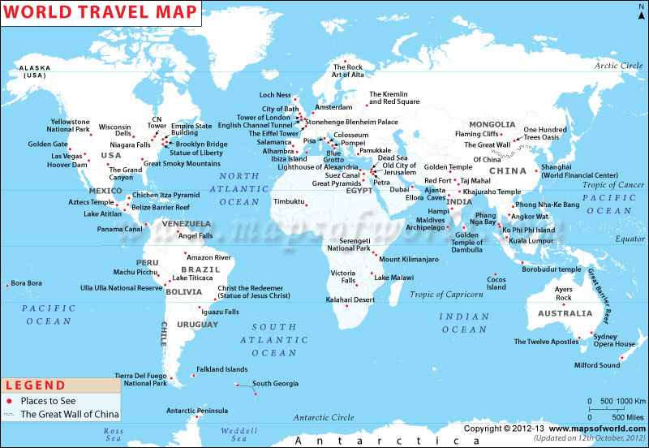
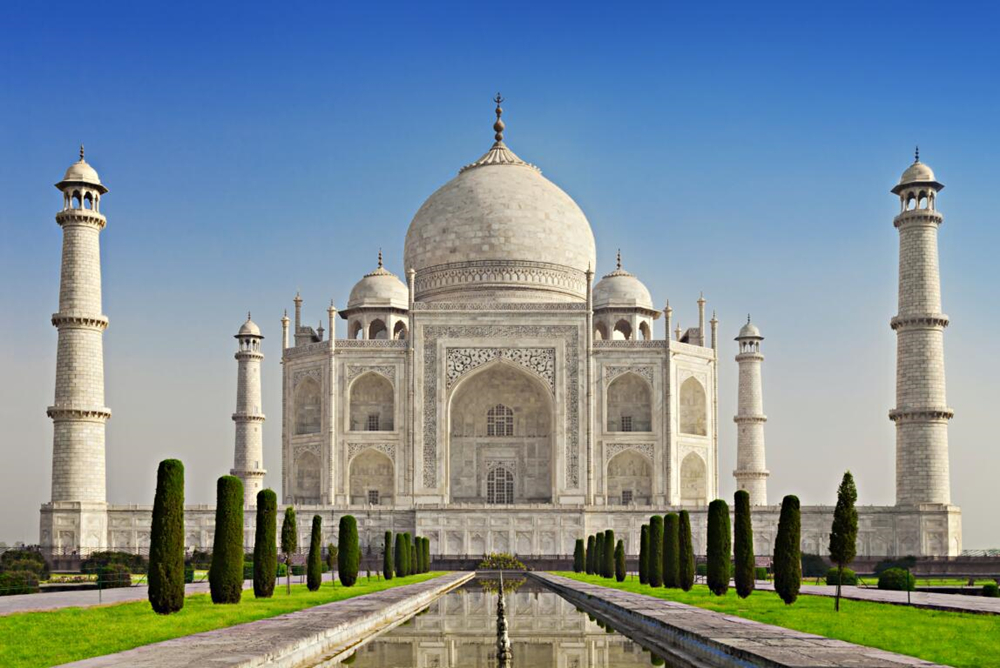
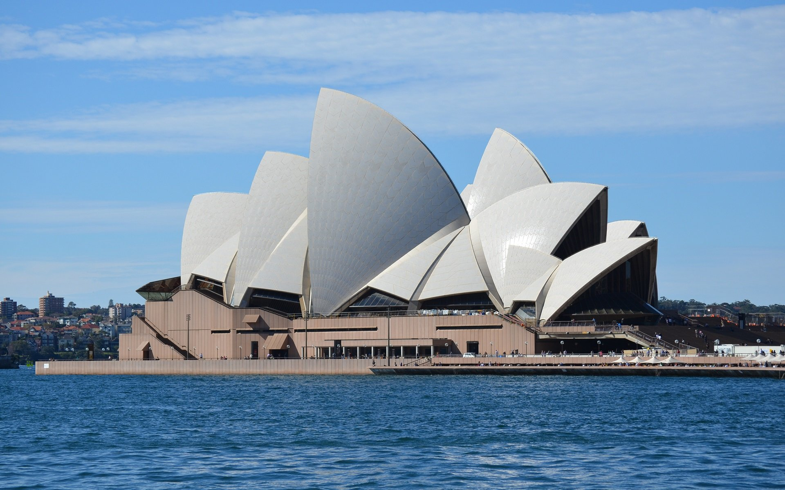
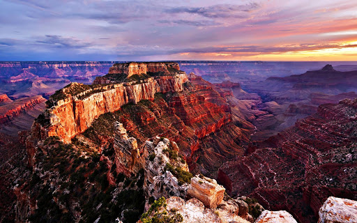
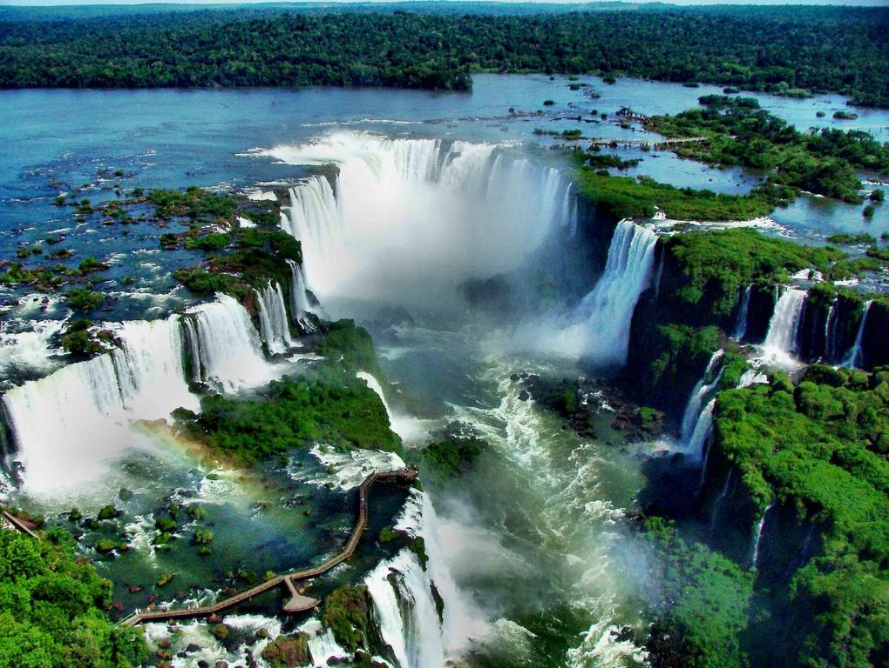
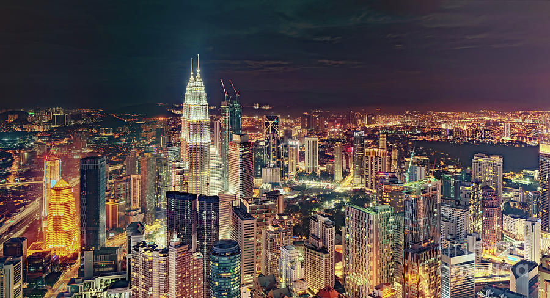

It is me, Fabienne, who takes the lead to talk to you about our 3-day getaway in the Pirin National Park with overnight stays in huts. he main assets of this hike? The absolutely incredible landscapes with dozens of spectacular views of the mountain lakes. Spending 2 nights in Bulgarian mountain huts was also one of our strong points.
Top Destinations


Agra, India

Sydney,Australia

Giza,Egypt

Arizona, USA

Argentina

Paris, France

Kuala Lumpur, Malaysia
Blogposts
Hiking in Bulgaria: 3 days in Pirin National Park
Things to do in budapest
Budapest is very regularly cited as one of the most beautiful cities in Europe and frankly I have no problem to understand why this is the case. The city has the particularity of being in reality the merger of 2 Hungarian cities: Buda and Pest. If there is one building in Budapest that you can’t miss, it’s the imposing parliament! Located on the banks of the Danube, it has been the seat of the Hungarian National Assembly since 1902.
Things to do in Cappadocia, Our top picks
Cappadocia is a popular tourist destination in Turkey and it is easy to understand why. In all we spent 6 days in Cappadocia and the least we can say is that we had a huge crush on this region of Turkey. Stay in Göreme: The most touristic place in Cappadocia. I would really like to recommend that you plan a minimum of 3 days and 2 nights on site.
Things to do in Zagreb: Capital city of Croatia
The Lotrščak tower is located just at the arrival of the funicular and it is from the top of this tower that we have one of the most beautiful views of the city. St Mark’s Church is the city’s most famous monument with its colourful tiled roof that illustrates the emblems of the city of Zagreb and Croatia. The museum of broken relationships is a very unique museum.
North of France: Visit Wimereux, Wissant and the amazin Opal coast
We take you on the roads of the Channel coast for a selection of our must-see in the region: Opal Coast, Wimereux and Wissant .For our first day on the coast, we parked our car on the side of Wissant and from there we left for a beautifulloop towards the Cap Blanc Nez. The idea of this hike was to make a loop through the land first, then back to the coast
How to visit the hill of crosses in Lithuania
The hill of crosses... Being in the Baltic countries, we simply couldn't resist to come and discover this truly unusual place up close. 150,000 crosses placed on a single small... this place has established itself as one of the symbols of the peaceful resistance of Lithuanians and Christians.
Sydney Opera House: A Mini Guide To Traverse Through The Most Iconic Place In Sydney! - by Ruchika Anand
One of the most beautiful modern cities in the world, Sydney is quite popular among tourists looking for a different experience. Located in Southern Hemisphere, the city is known for its beaches, wildlife, harbours and the iconic Sydney Opera House. Sydney Opera House is a performance centre, named after opera, a distinct European singing style. this beautiful piece of art and architecture was declared a World Heritage Site by UNESCO in 2007. There are six performance venues spread inside the beautiful building. On an average, around 2000 events are held every years at this performance centre. There is Concert Hall, which is the biggest venue of all. Joan Sutherland Theatre, Playhouse, Drama Theatre, Studio and Utzon Room (the smallest venue) host a varied range of performances – from rock music to seminars, 5 Best Sydney Opera House Shows: Storytime Ballet: Coppelia, Great Opera Hits, The Illusionists,La Boheme, Sarah & Duck’s Big Top Birthday. So, if you’re planning to visit Sydney any time soon, with your friends and family, make sure you check out these must-see shows here for the best experience!
My Experience Taking a Tour Through Egypt - by Travel Girls
There’s a saying in Egypt that if you drink from the Nile, you’ll return.I found myself fulfilling the prophecy nine years later. In this guide, I share my experience on a tour to The Pyramids of Giza - Cairo in Egypt.Have you really been to Egypt if you don’t visit the Giza Pyramids? The Great Pyramid is one of the seven wonders of the world – the oldest and the only one still standing. The three pyramids located at Giza are still revealing their secrets. Tickets are required to enter the pyramid complex and I’d recommend purchasing an extra ticket to enter one of the pyramids. The passages are steep, dim, and dusty and the resulting tombs are empty, having been robbed centuries before. But the experience makes you feel a bit like Indiana Jones in Disneyland as you enter the small hot entryway in the rock and explore the galleries, while surrounded by others doing the same. Keep in mind, entry is not recommended if you have asthma or claustrophobia. After a trip inside the pyramid, head up the road to the crest above the second pyramid and pick out a brightly tasseled and adorned camel to ride across shifting golden sand dunes where you can stop for a quick photo. Finally pay your respects to the Great Spinx, the broken-nosed half lion, half pharaoh crouching sentinel in front of the pyramids. Before wandering the temple, walk up in front of the seats set up for a night-light show. Here you’ll find the perfect spot away from the crowds to drink in the view and memorialize your visit.
Things to do around the Eiffel Tower - by Clemence
When people are visiting Paris, the most important thing to do while in Paris is obviously to see the Eiffel Tower, the greatest landmarks of the City of Lights. It is not by chance that this monument is so remarkable. Once you are face to face with the most iconic monument of Paris, you will be impressed by its size and greatness. The Eiffel Tower is located at the Champs de Mars on Avenue Anatole,5 in the seventh arrondissement in Paris.When you will be landing in Paris, you will see the Iron Lady from the airplane even on a cloudy day. The Eiffel Tower is 324 metres tall, 125 metres wide and weights over ten thousand tonnes! It has 1665 stairs. Climb them if you are brave enough. But you can do what most people do and just take the lift. You don’t want to miss the panoramic view from the second floor, with Paris at your feet. From the right bank to the left bank the Eiffel Tower offers you the most unique view over the major landmarks of the city of lights. Inside the Eiffel Tower, there are actually many things to see and experience. As you go up the tower, you will find out everything you want to know about the Eiffel Tower: from its origins and history to the construction evolution and all the renovations it went through all these years. After sunset, the Eiffel Tower sparkles with thousands of lights and it’s open til midnight!If you’re looking for a chic experience, you can enjoy a glass of champagne at the very top of the Eiffel Tower! The Eiffel Tower is located just by the river. So one of the things to do around the Eiffel Tower is to get into a boat cruise. Boat cruises are not a tourist trap. They are a touristic activity but it’s definitely worth your money. During cold weather, the tower shrinks about six inches due to the type of metal it is made of. During summer, it grows again but never more than those six inches! I hope to see you soon in one of our tours!
A Grand Canyon Experience is sort of on your bucket list, right?
When I say sort of, I mean, many of us think of our bucket list travel destinations as those far off places that we have a fat chance of ever getting to. In the case of the Grand Canyon, it is a destination that many people living in the US want to visit. What is more, unlike many of our bucket list trips, the Grand Canyon is a dream trip.Grand Canyon experiences are in high demand! That makes it expensive. That also means that exciting activities such as a rafting trip book up many months, sometimes years, in advance. We booked a VIP Grand Canyon Experience through Gray Line Tours and Papillon Enterprises, just 5 days in advance. For me, to experience the Grand Canyon was the highlight of our trip to Las Vegas. am super-stoked to tell you about our day at the Grand Canyon.At 05:10 in the morning, a Gray Line Mercedes Sprinter picked us up from our resort. The sprinter is a relatively comfortable 11 seater psuedo-van/bus type vehicle. There is some leg room, and some overhead storage. It was also equipped with a 36” television. Our first stop was for Hoover Dam viewing on the Mike O’Callahan-Pat Tillman Memorial Bridge.Security is still a concern, and vehicles must all stop for a security check, before entering the visitors area of the bridge. The visitors area has educational displays about the building of the dam, and the bridge. Several flights of steps must be climbed to get onto the bridge, which is equipped with a wide pedestrian lane. On our tour, 20 minutes were allotted for visitors to climb the steps up to the bridge, and get their photos of Hoover Dam. We made a diversion, for those of us who wanted to do a helicopter ride over the canyon.Bright Angel Lodge sits at the location that was most popular among visitors from the very first days that the Grand Canyon became widely known, and popular. Bright Angel Lodge is one of the most famous and most visited stops along the south rim of the Canyon. The Lodge is in the midst of the Historic Grand Canyon Village. The area can be crowded, however, the various lookouts, attractions, and trails, provide space for people to spread out. Upon entering Grand Canyon National Park through the main park entrance, Mather is the first lookout point from the rim, that you will come upon. It is a primary stop for most visitors. It is also where one of the Grand Canyon national Park signs is located, which many visitors, including us, sought out to get their Instagram photos. Mather was by far the busiest location we visited all day.Mather has a visitors center where food, gifts, and facilities are available, to the south of the main parking area, and several new features for visitors including a rimside amphitheater for ranger programs. After Mather Point, we again climb into our van for the long ride back to Las Vegas.I pondered how grateful I was for the experience, and all I had learned on the Grand Canyon Day Trip!
Memories from Kuala Lumpur – an introduction to Malaysia - by Young Adventurers
Malaysia’s thriving capital city is a colorful metropolis where every culture, religion, and taste smash together to form a new modern Asia unlike anywhere I’ve ever been before. The beating heart of Malaysia never stops, 24 hours a day it thrums along never sleeping and always alive, giving off a unique feel of energy that I haven’t really encountered in other big cities before. With a feeling of youthful ambition, Kuala Lumpur is quickly elbowing its way up the ladder of big cities demanding a visit in and of itself. The story of Kuala Lumpur is best experienced through food, something, of course, I never object to when traveling. From sizzling satays to spicy rice dishes to fresh everything, all the mangos, all the coconuts, if you only come to Kuala Lumpur, let it be for the food. An absolute mecca for foodies, the mishmash of cultures and stories here really play into building KL into a city of feasts. Famous for street food, which of course I thoroughly enjoyed, I also made sure to check out more modern fares and local haunts, always on the hunt for the next best meal. Kuala Lumpur is the textbook definition of a modern-day melting pot.Cosmopolitan and fresh, its three main ethnicities are Malay, Chinese, and Indian, all of which coexist and bring their own languages, cultures, religions, histories, traditions, and of course, foods to mix together and form a modern-day Malaysia. A veritable rainbow in real life, I’m always drawn to the more vibrant places of the world, and Kuala Lumpur is no exception. From the incredible street art to the street food markets to the temples, mosques and other noteworthy spots, KL embodies the philosophy of why paint in beige when you can have a rainbow? Kuala Lumpur is full of smells that are utterly unique and different from what I’ve grown accustomed to in the mountains of New Zealand. I don’t know what’s gotten into me, but the more I travel, the more attune I become to the way places smell. And of course memory and smell are completely intertwined.It was absolutely sweltering when we made our way out of the city center to visit the Putra Mosque, a place I had heard about but really wanted to clap eyes on. Completely pink, it’s probably one of the most memorable mosques I’ve ever been to. For a big city that seems a bit impenetrable, Kuala Lumpur left me feeling nothing but rosy happy thoughts. My memories are all positive, filled with noodles and colors, of delicious spices and happy smiles among new friends. It’s a place I wouldn’t hesitate to return to again, and get to know a little better. Thank you Malaysia!
A Sunrise Tour of Tajmahal in Agra- by Sarah,WanderBlogger
Most everyone has heard of the Taj Mahal, but besides knowing what it looks like, do you know what it actually is? I know we didn’t before my trip to India. The Taj Mahal is a palatial marble mausoleum located in Agra, India and built by Shah Jahan for his beloved wife, Mumtaz Mahal. Its beauty and scale often earn it a spot on ‘Man-Made Wonders Of The World’ lists. It is considered to be the greatest example of Mughal architecture and art in the world. After realizing exactly how hot and crowded Agra gets by noon, we knew we wanted to pay this icon a visit as early as possible, so a sunrise tour of the Taj Mahal it was !. We entered through a gate exactly the same as the one we entered to see the Baby Taj the day before. Immediately upon entering, we walked into a short hallway with a view of the Taj Mahal at the end of it. Its massive size is evident straight away, even from this distance. Tree-lined paths lead the way to the mausoleum and a beautiful fountain stretches from one end of the gate to the Taj Mahal itself. This was where having a tour guide came in really handy. Not only was he there to provide the history and facts about what we were seeing, but he also took all of our pictures for us. Visiting the Taj Mahal is kind of like riding a roller coaster. There’s a definite element of anticipation before you actually see it, and once you set yours eyes on it, the excitement to enter its doors only grows even greater. The Taj Mahal is still 100% worth the trip to see!
3 Days Itinerary For Iguazu Falls - by Pete R
I thought I've seen the most epic waterfall in the world already when I was in Zambia visiting Victoria Falls, and there was no way any waterfall could top that, and then I arrived in Iguazu Falls and was blown away by its sheer beauty. To see the Iguazu Falls for the first time, is to see nature at its finest and no trip to South America is completed without visiting Iguazu Falls. Visiting during February and March is recommended with the water level still quite high and the sky is clear. Be warned that it will be humid during this time but you will be cool off by the spray from the waterfall in no time when you are face-to-face with the Falls. he Argentinian side of Iguazu Falls is better than either Paraguay's or Brazilian side so I would recommend staying on the Argentinian side instead. Traveling here, on average, will cost you more than traveling in most countries out there. You can expect to spend around 45 - 65 USD per day per person with food, accommodation and transportation. Keep in mind that this is just a suggested daily budget based on my style of traveling, which is leaning more toward the budget side of things. For the Argentinian side, the entrance ticket to Iguazu Falls is 700 ARS (18 USD) per person as of 2019 and you can buy it from the Visitor Center by either cash (Argentinian Pesos only) or via credit cards. For the Brazilian side, the entrance ticket to Iguazu Falls is 68 BZR (18 USD) per person as of 2019 and you can either buy it online from Iguazu Official Website or from the Entrance by either cash or via credit cards. So on our first day at Iguazu Falls, start your day as early as you can (7 AM) and head over to the Puerto Iguazu bus terminal and buy a ticket to Iguazu Falls from the many kiosks nearby. Make sure you are buying the one to "Cataratas del Iguazu" and not the one going to the Brazilian side (Foz do Iguaçu etc.). Depending on how crowded it is that morning, you might need to wait 30 minutes or more to get on the bus. Once you are on the bus, it will take around 20 minutes to get to the Visitor's Center where you can buy the ticket and grab a free map for the park. Right out of the gate, we go east following the Lower Circuit route (Circuito Inferior). As you walk down the stairs, you will get a glimpse of the Garganta del Diablo or Devil's Throat, a giant U-shaped cascade, as powerful as its name, that you will be going at the end. The Upper Circuit (Circuito Superior) is another 1.7 km beautiful walking trail that takes you ON the Rio Iguazu river, overlooking the cascade from above. One tip I have for you here if you want to get a photo of the Devil's Throat without the people, there is a gated section where a commercial photographer set up right on the walkway facing the Devil's Throat where they will take a photo of you and you will have to pay them to get the photo. On your last day at Puerto Iguazu, you can either relax in one of the many hotels equipped with a pool as the humidity is probably getting to you by this point, or go on an epic helicopter tour to experience the Iguazu Falls from above.